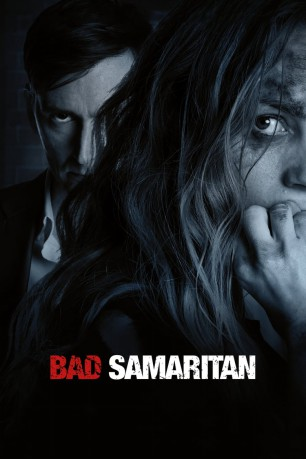

#9662 Bad Samaritan - Im Visier des Killers
Alternativ: Bad Samaritan
 gesehen am 10.10.2018
gesehen am 10.10.2018
 
 IMDB-Wertung: 6.4 / 10
IMDB-Wertung: 6.4 / 10  Metascore: 42
Metascore: 42 
Sean Falco und sein Kumpel Derek haben ein einträgliches Geschäft. Der eine parkt für ein Restaurant Autos, während der andere zu dieser Zeit in die Häuser der Eigentümer einbrechen kann, die gerade beim Essen sind. Alles geht gut, bis Sean eines Tages bei einem seiner Einbrüche eine Frau entdeckt, die in einer dunklen Kammer eingesperrt und angekettet ist. Als Sean versucht, die Frau zu befreien, kommt der Besitzer deutlich früher zurück. Und nun beginnt für die Kleinkriminellen ein Albtraum. Denn natürlich glaubt ihnen die Polizei nicht, schließlich ist Hausbesitzer Cale ein angesehener Bürger der Stadt. Doch Sean und Derek müssen schnell am eigenem Leib erfahren, dass sich hinter dieser Fassade ein eiskalter Killer verbirgt. Und der macht nun Jagd auf sie…
Jahr: 2018
Dauer: 110 Minuten
FSK: 16
Land: USA Studio: Electric EntertainmentTonspuren: DTS - ,
Untertitel: Deutsch,
Auflösung: 1080p (1920x800) Größe: 8878 MB
Genre: Thriller, Krimi
Regisseur: Dean Devlin
Drehbuch: Brandon Boyce
Soundtrack: Joseph LoDuca
Darsteller:
 David Tennant als Cale Erendreich
David Tennant als Cale Erendreich Robert Sheehan als Sean Falco
Robert Sheehan als Sean Falco Kerry Condon als Katie
Kerry Condon als Katie- Carlito Olivero als Derek Sandoval
- Jacqueline Byers als Riley Seabrook
 Rob Nagle als Don Falco
Rob Nagle als Don Falco- David Meyers als Nino
 Tony Doupe als Detective Wayne Bannyon
Tony Doupe als Detective Wayne Bannyon- Lisa Brenner als Helen Leyton
- Sofia Hasmik als Jocelyn
- Delpaneaux Wills als Officer Aguilar
- Hannah Barefoot als Sabine
- Danny Bruno als Mitchell
- Dana Millican als Female Cop
- Brandon Boyce als FBI Supervisor
- David S. Hogan als Uniform Cop
- Emily Kimball als Girlfriend #1
- Jared Q. Miller als FBI Agent
- Alex Donnolo als Valet
- Austin Leo als Young Cale
- Tim Bennett als FBI Agent (uncredited)
- Mike Brakefield als Restaurant Patron (uncredited)
- Peter James DeLuca als FBI Agent (uncredited)
- Ben Hausbach als Neighbor (uncredited)
- Chris Ihlenfeldt als Umbrella Pedestrian (uncredited)
 P.E. Ingraham als Cale's Dinner Guest (uncredited)
P.E. Ingraham als Cale's Dinner Guest (uncredited)- Robert Pescovitz als Bill Seabrook (uncredited)
- Jason Reynolds als SWAT Officer (uncredited)
- James A. Smith als FBI Agent (uncredited)
- David Withers als Harold T. Rosen (uncredited)
- Tracey Heggins als FBI Agent Olivia Fuller
- Lorraine Bahr als Patty Falco
- Jacob Resnikoff als Rowan Falco
- Brenda Braxton als Newscaster
- Lydia Reim als FBI Agent Driver
- Sam Bangs als Horse Trainer
- Joseph Thomas Bailey als Arrested Biker in Police Department (uncredited)
- Jerry Bell Jr. als Tow Truck Driver (uncredited)
- Evan Brown als Student (uncredited)
- Grace Brunson als Riley's Friend (uncredited)
- Sasha Dadvar als FBI SWAT Team Leader (uncredited)
- Doug Deibele als Pedestrian (uncredited)
- Cassandra Frost als Nurse (uncredited)
- Jordan Kelley als Student (uncredited)
- Patrick Kwan als Uniform Officer (uncredited)
- Christopher Mead als SWAT Officer (uncredited)
- Jeremy Moore als Detective (uncredited)
- Belle Suzanne Raymond als Nurse (uncredited)
- Julianne Ruth als Nurse (uncredited)
- Eric Sahlstrom als Restaurant Guest (uncredited)
Datei: X:\2018(A-F)\Bad Samaritan - Im Visier des Killers (2018, FSK16, 1920x800).mkv seit 01.10.2018
Festplatte: HD 2017(A-Z)-2018(A-F)
 Es gibt insgesamt 151 Filme in der Gruppe '2018(A-F)'
Es gibt insgesamt 151 Filme in der Gruppe '2018(A-F)'